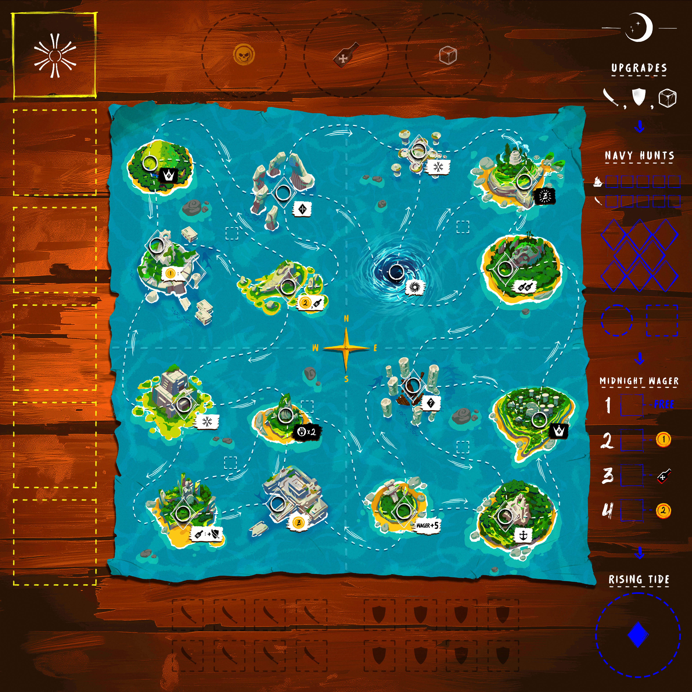
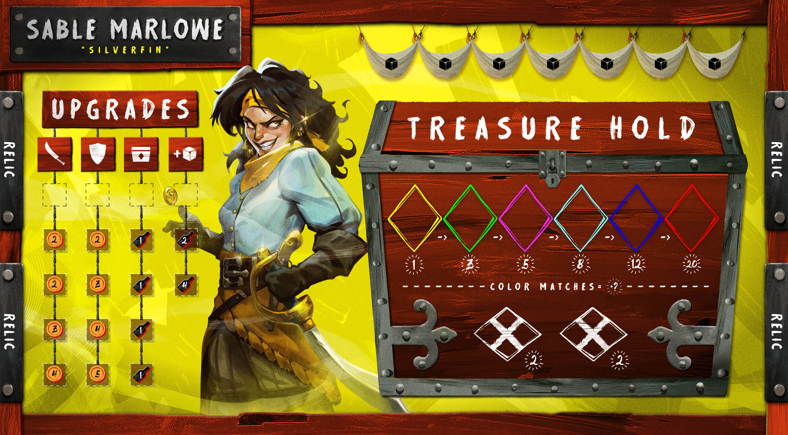
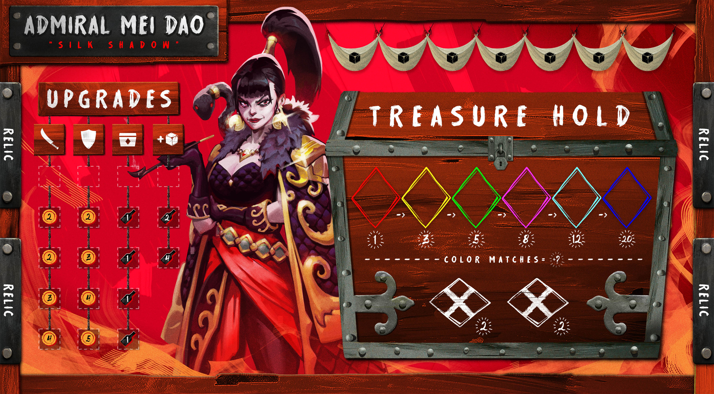
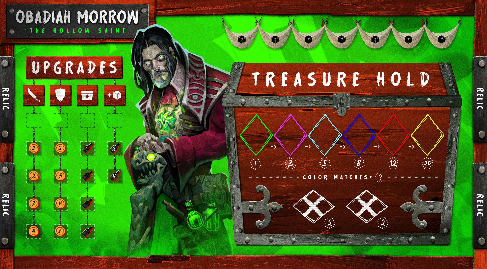
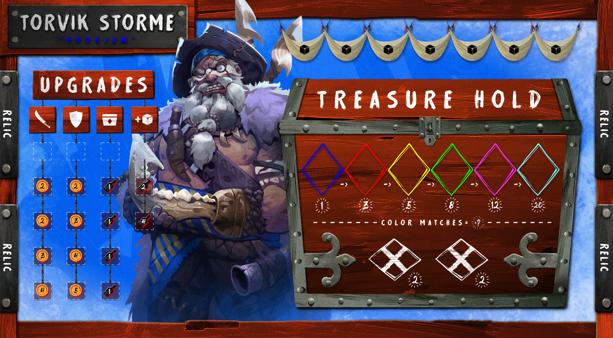
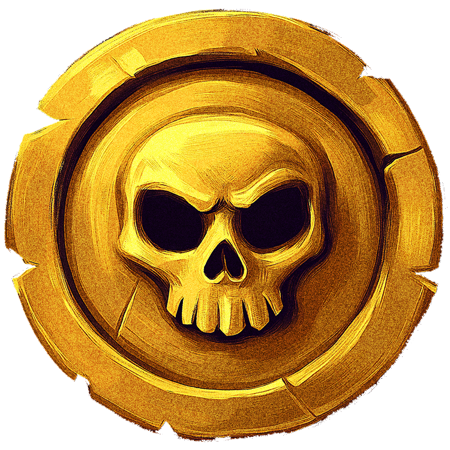

Tide of Avaris
Set sail for the Coralunas, where every treasure is a temptation and every pirate is a threat.
- Players2–4
- Time90–120 min
- Ages12+
- StatusIn Development
The pitch
Tide of Avaris is a competitive pirate strategy game for 2–4 players where captains race to collect, protect, and bury the most valuable treasure before the seas run dry. Each day, you’ll command your unruly crew dice to sail between islands, gather rum and gold, seize relics, battle rival pirates, and dodge the relentless Navy. But treasure left aboard your ship is never safe. Bury too early and you may fall behind; wait too long and another captain may steal your hard-earned loot.
Bury or bust
Every doubloon in your hold is a bet on timing. Bury the chest now and you bank the score — but you also tell every other captain on the map exactly what you’re worth. Hold it one more day and you might double up. You might also wake up to an empty deck and a Navy frigate on the horizon.
Unruly crew dice
Each day, your crew rolls. Pips drive every action you can take — sail, fight, plunder, bury — and the dice never quite roll the way you wanted.
The treasure hold
Six gem slots, six colors, escalating payouts for matching sets. Half the game is deciding what to keep, what to bury, and what to spend on a brawl.
Asymmetric captains
From Sable Marlowe the Silverfin to Obadiah Morrow the Hollow Saint — every captain comes with their own upgrade ladder and their own way of breaking the rules.
The Navy closes in
The Coralunas don’t stay calm. The rising tide drains the safe routes, the Navy hunts the richest holds, and the longer the game runs, the less the sea forgives.
The board, the captains, the gold
Snapshots from the current build — the simplified map of the Coralunas, three of the asymmetric captain mats, and the gold doubloon that drives every wager and brawl on the table.






Status
Tide of Avaris is in the late stages of development. We’re finalizing the map, balancing house asymmetry, and preparing a small print run for testing. For updates or to join the playtest list, write to playtest@tricoastalgames.com.